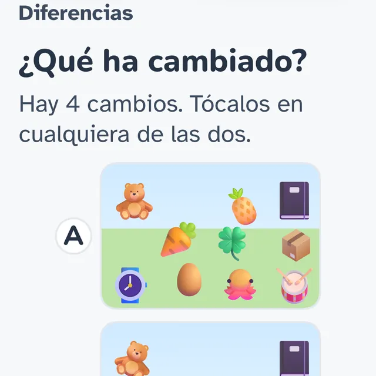

- El entrenamiento diario completo, con sus seis ejercicios
- Ocho juegos, con casi 400 partidas distintas
- Tres juegos libres al día, además del entrenamiento
- Historial de los últimos 30 días
- Seguir a la persona desde el móvil de un familiar: quien sigue no paga nada